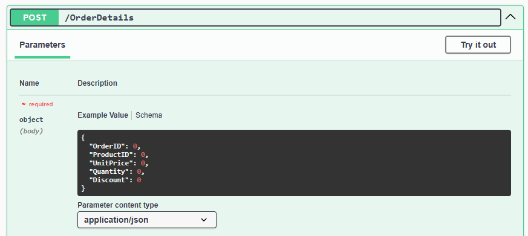

OINO Is Not an ORM but it's trying to solve a similar problem for API development. Instead of mirroring your DB schema in code that needs manual updates, OINO will get the data schema from DBMS using SQL in real time. Every time your app starts, it has an updated data model which enables automatic (de)serialize SQL results to JSON/CSV and back. OINO works on the level below routing where you pass the method, URL ID, body and request parameters to the API-object. OINO will parse and validate the data against the data model and generate proper SQL for your DB. Because OINO knows how data is serialized (e.g. JSON), what column it belongs to (e.g. floating point number) and what the target database is, it knows how to parse, format and escape the value as valid SQL.
const result:OINOApiResult = await api_orderdetails.doRequest("GET", id, body, params)
return new Response(result.modelset.writeString(OINOContentType.json))
Install the @oino-ts/core npm package and necessary database packages and import them in your code.
bun install @oino-ts/core
bun install @oino-ts/bunsqlite
import { OINODb, OINOApi, OINOFactory } from "@oino-ts/core";
import { OINODbBunSqlite } from "@oino-ts/bunsqlite"
Register your database implementation and logger (see OINOConsoleLog how to implement your own)
OINOLog.setLogger(new OINOConsoleLog())
OINOFactory.registerDb("OINODbBunSqlite", OINODbBunSqlite)
Creating a database connection OINODb is done by passing OINODbParams to the factory method. For OINODbBunSqlite that means a file url for the database file, for others network host, port, credentials etc.
const db:OINODb = await OINOFactory.createDb( { type: "OINODbBunSqlite", url: "file://../localDb/northwind.sqlite" } )
From a database you can create an OINOApi by passing OINOApiParams with table name and preferences to the factory method.
const api_employees:OINOApi = await OINOFactory.createApi(db, { tableName: "Employees", excludeFields:["BirthDate"] })
When you receive a HTTP request, just pass the method, URL ID, body and params to the correct API, which will parse and validate input and return results.
const result:OINOApiResult = await api_orderdetails.doRequest("GET", id, body, params)
The results for a GET request will contain OINOModelSet data that can be written out as JSON or CSV as needed. For other requests result is just success or error with messages.
return new Response(result.modelset.writeString(OINOContentType.json))
OINO maps HTTP methods GET/POST/PUT/DELETE to SQL operations SELECT/INSERT/UPDATE/DELETE. The GET/POST requests can be made without URL ID to get all rows or insert new ones and others target a single row using URL ID.
Request and response:
> curl.exe -X GET http://localhost:3001/orderdetails/11077:77
[
{"_OINOID_":"11077:77","OrderID":11077,"ProductID":77,"UnitPrice":13,"Quantity":2,"Discount":0}
]
SQL:
SELECT "OrderID","ProductID","UnitPrice","Quantity","Discount" FROM [OrderDetails] WHERE ("OrderID"=11077 AND "ProductID"=77);
Request and response:
> curl.exe -X POST http://localhost:3001/orderdetails -H "Content-Type: application/json" --data '[{\"OrderID\":11077,\"ProductID\":99,\"UnitPrice\":19,\"Quantity\":1,\"Discount\":0}]'
{"success":true,"statusCode":200,"statusMessage":"OK","messages":[]}
SQL:
INSERT INTO [OrderDetails] ("OrderID","ProductID","UnitPrice","Quantity","Discount") VALUES (11077,99,19,1,0);
Request and response:
> curl.exe -X PUT http://localhost:3001/orderdetails/11077:99 -H "Content-Type: application/json" --data '[{\"UnitPrice\":20}]'
{"success":true,"statusCode":200,"statusMessage":"OK","messages":[]}
SQL:
UPDATE [OrderDetails] SET "UnitPrice"=20 WHERE ("OrderID"=11077 AND "ProductID"=99);
Request and response:
> curl.exe -X DELETE http://localhost:3001/orderdetails/11077:99
{"success":true,"statusCode":200,"statusMessage":"OK","messages":[]}
SQL:
DELETE FROM [OrderDetails] WHERE ("OrderID"=11077 AND "ProductID"=99);
OINO handles serialization of data to JSON/CSV/etc. and back based on the data model. It knows what columns exist, what is their data type and how to convert each to JSON/CSV and back. This allows also partial data to be sent, i.e. you can send only columns that need updating or even send extra columns and have them ignored.
undefined can be used to represent non-existent values (leaving property out works too but preserving structure might be easier e.g. when translating data).null represents null values.OINO functions as a database abstraction, providing a consistent interface for working with different databases. It abstracts out different conventions in connecting, making queries and formatting data.
Currently supported databases:
To support tables with multipart primary keys OINO generates a composite key _OINOID_ that is included in the result and can be used as the REST ID. For example in the example above table OrderDetails has two primary keys OrderID and ProductID making the _OINOID_ of form 11077:99.
Since OINO controls the SQL, WHERE-conditions can be defined through OINOFilter that are passed as HTTP request parameters. No more API development where you make unique API endpoints for each filter that fetch all data with original API and filter in backend code. Every API can be filtered when and as needed without unnessecary data tranfer and utilizing SQL indexing when available.
Swagger is great as long as the definitions are updated and with OINO you can automatically get a Swagger definition including a data model schema.
if (url.pathname == "/swagger.json") {
return new Response(JSON.stringify(OINOSwagger.getApiDefinition(api_array)))
}

OINO is developped Typescript first but compiles to standard CommonJS and the NPM packages should work on either ESM / CommonJS. Checkout sample apps readmeApp (ESM) and nodeApp (CommonJS).
OINO is htmx.org friendly, allowing easy translation of OINODataRow to HTML output using templates (cf. the htmx sample app).
Autoinc numeric id's are very pragmatic and fit well with OINO (e.g. using a form without primary key fields to insert new rows with database assigned ids). However it's not always sensible to share information about the sequence. Hashids solve this by masking the original values by encrypting the ids using AES-128 and some randomness. Length of the hashid can be chosen from 12-32 characters where longer ids provide more security. However this should not be considereded a cryptographic solution for keeping ids secret but rather making it infeasible to iterate all ids.
OINO is currently a hobby project which should and should considered in alpha status. That also means compatibility breaking changes can be made without prior notice when architectual issues are discovered.
For a beta status following milestones are planned:
There needs to be a realistic app built on top of OINO to get a better grasp of the edge cases.
Handling of SQL-injection attacks needs a thorough review, what are the relevant attack vectors are for OINO and what protections are still needed.
Things that need to happen in some order before beta-status are at least following:
Simple cases of views would work already in some databases but edge cases might get complicated. For example
Supporting batch updates similar to batch inserts is slightly bending the RESTfull principles but would still be a useful optional feature.
Similar to filtering, aggregation, ordering and limits can be implemented as HTTP request parameters telling what column is aggregated or used for ordering or how many results to return.
One core idea is to be efficient in not making unnecessary copies of the data and minimizing garbage collection debt. This can be taken further by implementing streaming, allowing large dataset to be written to HTTP response as SQL result rows are received.
It would be useful to allow developer to validate / override SQL generation to cover cases OINO does not support or even workaround issues.
Even though the basic case for OINO is executing SQL operations on individual rows, having an option to use SQL transactions could make sense at least for batch operations.
Fixing bugs is a priority and getting good quality bug reports helps. It's recommended to use the sample Northwind database included with project to replicate issues or make an SQL script export of the relevant table.
Understanding and prioritizing the use cases for OINO is also important and feedback about how you'd use OINO is interesting. Feel free to raise issues and feature requests in Github, but understand that short term most of the effort goes towards reaching the beta stage.
Typescript building with different targets and module-systemts and a ton of configuration is a complex domain and something I have little experience un so help in fixing problems and how thing ought to be done is appreciated.
OINO uses the following open source libraries and npm packages and I would like to thank everyone for their contributions:
OINO has been developed using the Bun runtime, not because of the speed improvements but for the first class Typescript support and integrated developper experience. Kudos on the bun team for making Typescript work more exiting again.
The SQL scripts for creating the sample Northwind database are based on Google Code archive and have been further customized to ensure they would have identical data (in the scope of the automated testing).